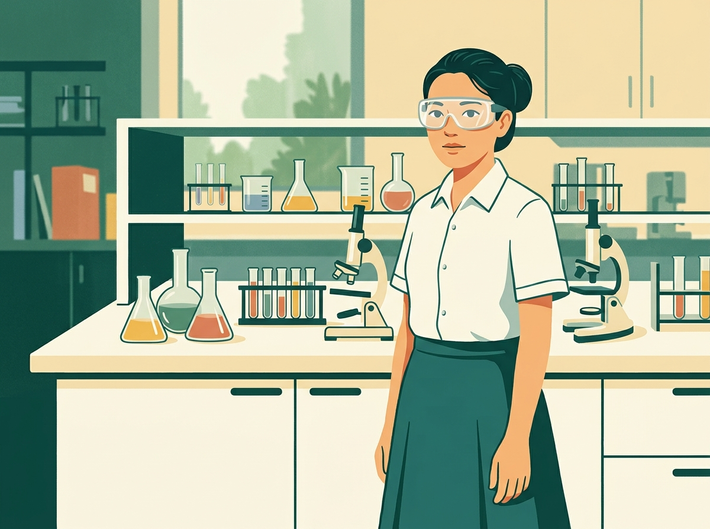
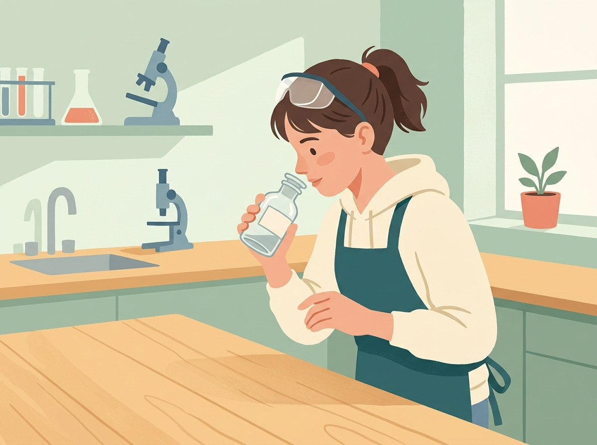
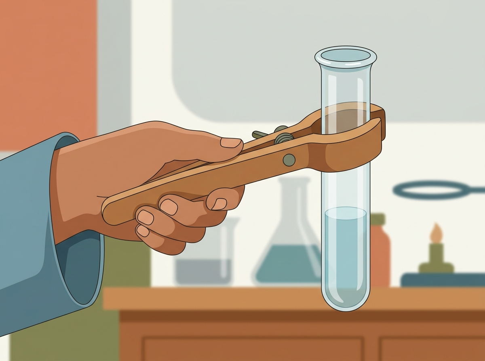
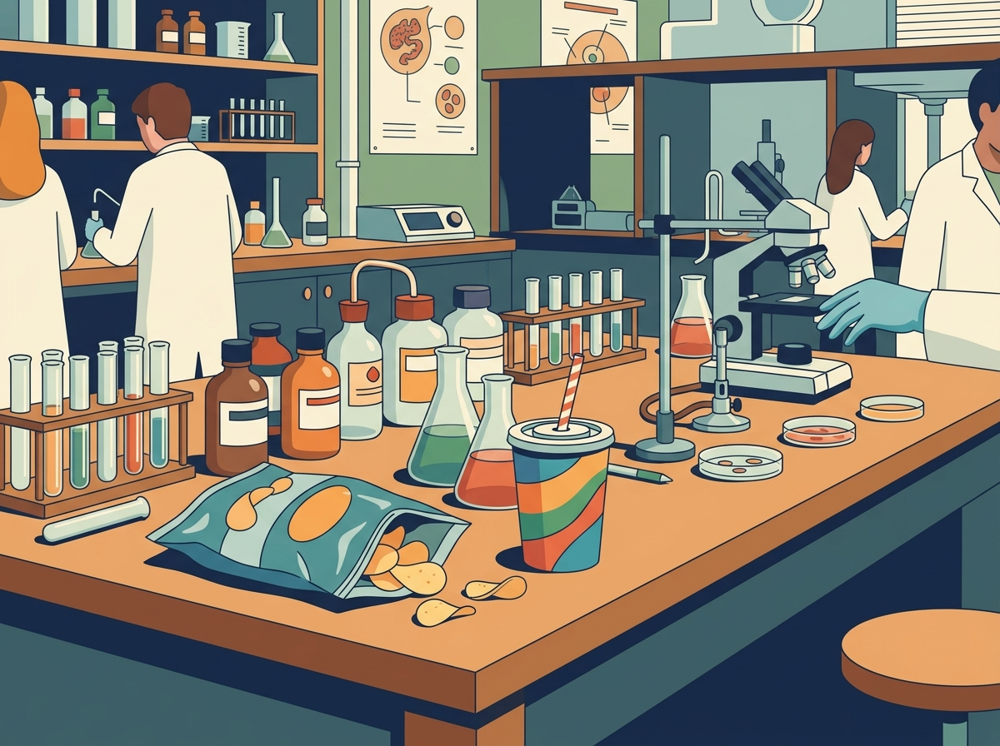
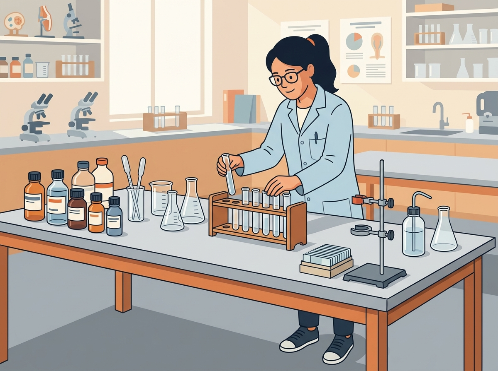
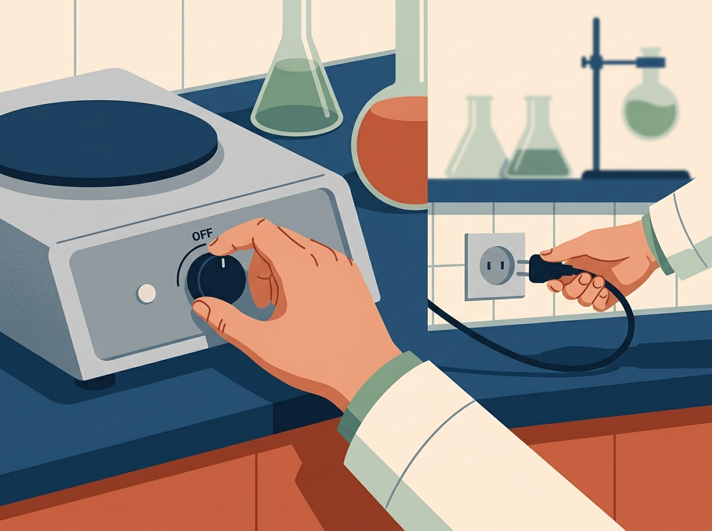
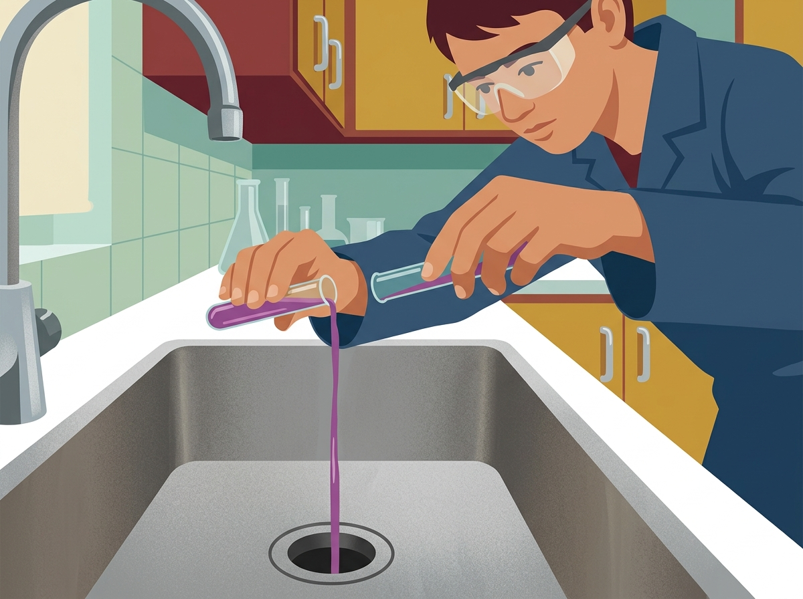
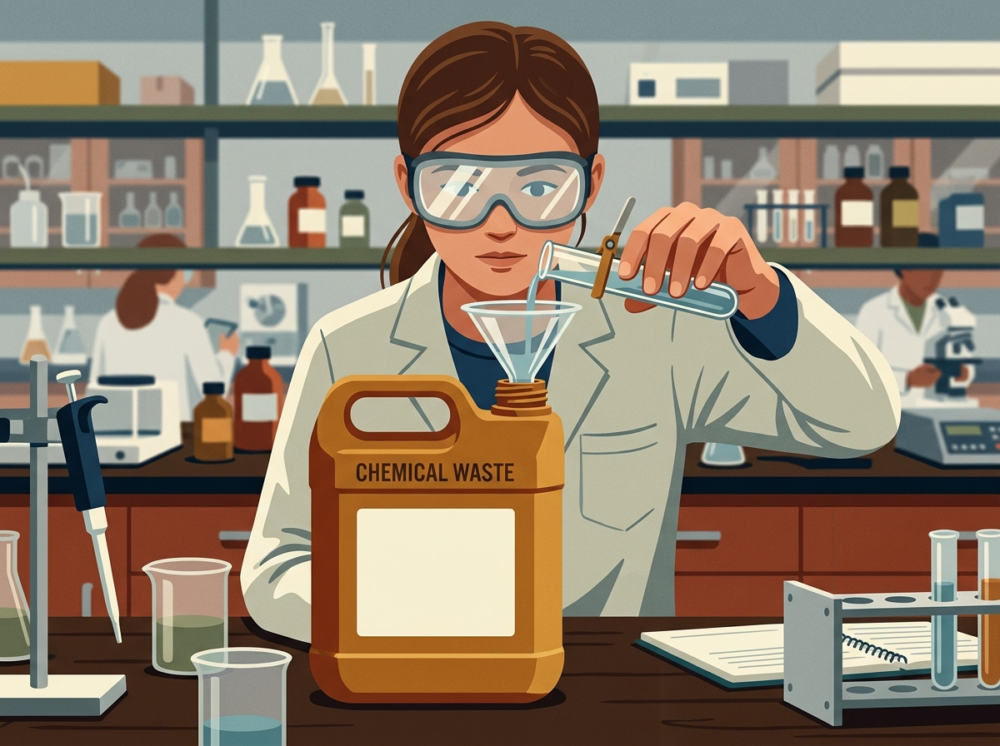
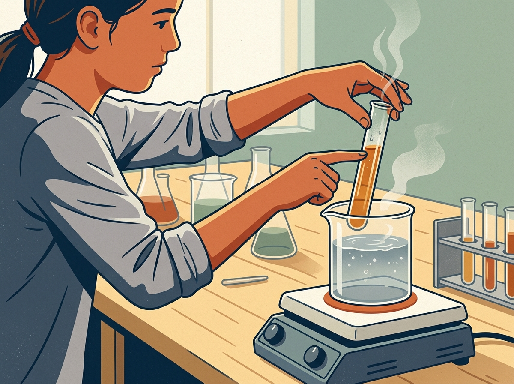
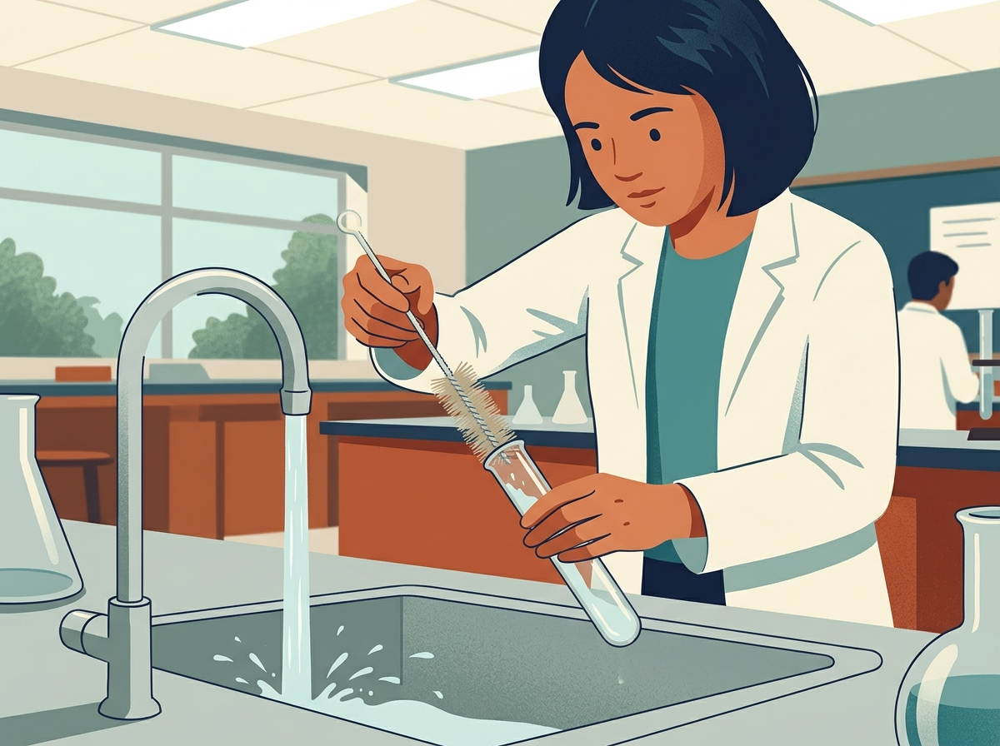

Quy tắc an toàn trong phòng thí nghiệm là điều kiện bắt buộc trước khi tiến hành mọi hoạt động thực hành.





Trong thí nghiệm này, bạn sẽ dùng thuốc thử Benedict để nhận biết glucose.
Dựa vào quy trình thí nghiệm, bạn hãy lựa chọn dụng cụ, thiết bị, hóa chất cần dùng.
Trước tiên, bạn cần pha dung dịch glucose dùng cho thí nghiệm.
Hai dung dịch glucose và thuốc thử Benedict cần được lấy với thể tích bằng nhau vào cùng một ống nghiệm.
Hỗn hợp phản ứng được làm nóng gián tiếp trong cốc nước ở 80–90°C trên bếp điện để phản ứng sinh kết tủa đỏ gạch xảy ra.
Thí nghiệm đã kết thúc nhưng công việc trong phòng thí nghiệm chưa hoàn thành. Bạn cần xử lí chất thải, vệ sinh dụng cụ và sắp xếp lại khu vực thực hành đúng cách.





Bạn đã hoàn thành thí nghiệm và quan sát được kết quả. Hãy dựa vào ống nghiệm trước mặt để trả lời từng câu hỏi. Các câu trả lời đúng sẽ được lưu vào báo cáo của bạn.
Bạn đã hoàn thành các bước thực hành và trả lời các câu hỏi về kết quả. Hãy lựa chọn những nội dung cần có trong một báo cáo thí nghiệm.
Tên thí nghiệm: Nhận biết glucose bằng thuốc thử Benedict
• Mẫu: glucose; nước.
• Dụng cụ: cốc pha mẫu, que khuấy, pipet, một ống nghiệm, giá ống nghiệm, cốc thủy tinh chịu nhiệt, kẹp ống nghiệm.
• Thiết bị: bếp điện.
• Hóa chất: thuốc thử Benedict.
1. Hòa tan 20 g glucose trong 100 mL nước.
2. Lấy 2 mL dung dịch glucose và 2 mL Benedict cho vào cùng một ống nghiệm.
3. Đặt ống nghiệm vào cốc chứa 250 mL nước; miệng ống hướng ra xa người.
4. Làm nóng ở 80–90°C trong 3 phút.
5. Tắt bếp, dùng kẹp lấy ống nghiệm ra và đặt lên giá.
6. Thu dọn khu vực thực hành đúng cách.
Bạn đã hoàn thành xuất sắc thí nghiệm nhận biết glucose bằng thuốc thử Benedict và lập được báo cáo khoa học từ chính quá trình thực hành.